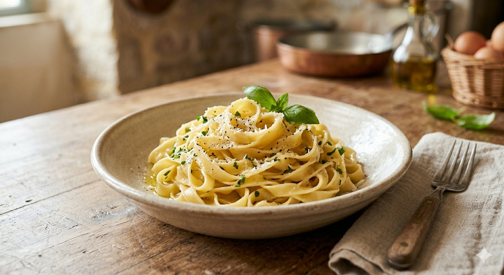

Mes Pâtes Fraîches Maison
Rien ne vaut le plaisir de faire ses pâtes soi-même. Mon secret pour une texture parfaite ? Un mélange à parts égales de farine de blé et de semoule de blé dur très fine.

Les Ingrédients (pour 3 personnes)
- 150g de farine de blé (type 55)
- 150g de semoule de blé dur très fine
- 3 œufs frais
- Une pincée de sel

Mélangez bien les deux farines, formez un puits, ajoutez les œufs et le sel. Pétrissez longuement jusqu'à obtenir une pâte lisse. Laissez reposer avant d'étaler.

Étalez finement, coupez selon votre envie, et plongez dans l'eau bouillante ! Une noisette de beurre, un peu de parmesan, et dégustez.
↩ Retour à l'accueil